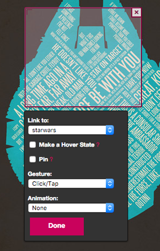
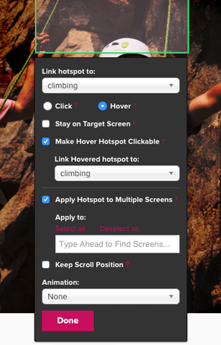

Usability issues were losing customers
One of the biggest issues customers encountered was the inability to selectively pin hotspots, which created a huge issue when making more detailed prototypes. This meant that menus that weren't persistent throughout the whole site would have to be done manually across multiple pages; a daunting task if over 100 images were uploaded.
Others included:
- Preview function was slow and took forever to load, it also opened a new tab.
- onHover effects weren't clickable, which was frustrating when making dropdown menus.
- It was hard to find the correct screen when leafing through 50+ images. No search or thumbnail previews available.
- Assuming that the default interaction was onClick was confusing, "pin" was mistaken as the onClick interaction by the testers.
- It was impossible to create mid-page menus since an interaction would load a new page and reset it to the top.
- There was no quick way to "keep your place" while going through and making user flows.
User Testing: Prototype Creation
Prototype creation involved a 5 part wizard:
- Upload Screen
- Creation
- Feedback Type
- Open or Closed
- Finalize and Name
Main Takeaways from User Testing
Heavy usability issues were found within the creation step, which created most difficulties. We initially assumed that the testers would make it through the 5 steps, but it turned out that they could barely finish creation within a reasonable amount of time before asking to give up.
From there we reasoned that finishing the actual creation within a reasonable amount of time would derive the most value with our limited development availability. We decided to focus specifically on the hotspot menu.
Synthesized basic takeaways into sketches
Implementation of the finalized design
We had a one week window where the designer and the engineer were available to take the time to work with me to finish up these fixes. Within that week, since a lot of the styling was set we were able to add many useful features as detailed below with the comparison between the new and the old version of the menu:
- 
-
Original Menu Breakdown
- Is it click by default?
- It pins to everything
- Standard gestures
- Standard animations
- 
-
New Menu Breakdown
- Shows that it's click or hover
- Typeahead search for all fields
- Mini thumbnails of uploaded images
- onHover + onClick in a single hotspot; they can link to two different screens
- Applying hotspots to multiple screens selectively, the new version of "pinning"
- Introduced more verbose tooltips; sometimes the copy wasn't clear enough.
- Added "keep scroll position"
- Made a preview state that didn't open a new window.
- Added "Shift+click" shortcut to ffwd to the linked screen of the hotspot.
Video demo of new hotspot menu features
 Sketch 1
Sketch 1 Detail 1.1
Detail 1.1 Detail 1.2
Detail 1.2 Detail 1.3
Detail 1.3